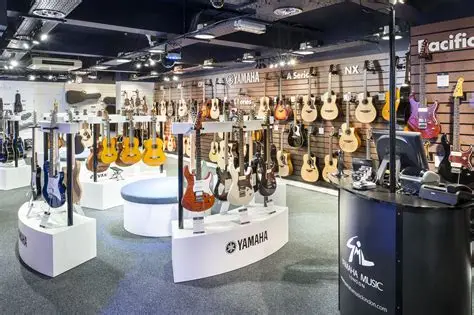

Yamaha fabrica mucho mas que motocicletas
Muchas personas relacionan el nombre Yamaha unicamente con motocicletas, pero la marca tiene una historia empresarial mucho mas amplia.
Por una parte, Yamaha Corporation se dedica a instrumentos musicales y equipos de audio. Entre sus productos se encuentran pianos, teclados, guitarras, baterías y sistemas de sonido.
Por otra parte, Yamaha Motor desarrolla motocicletas, motores fuera de borda para embarcaciones y otros productos relacionados con la movilidad y las actividades recreativas. Aunque ambas compañías comparten el nombre y sus raíces históricas, Yamaha Corporation y Yamaha Motor son empresas distintas, con actividades y líneas de productos diferentes.
Esta diversidad demuestra cómo una marca originada en un sector puede expandirse hacia otras áreas mediante la ingeniería, el desarrollo de productos y la innovación. También ayuda a explicar por qué el nombre Yamaha aparece en contextos tan diferentes: desde un estudio musical hasta una carretera o una embarcación.
volver al inicio